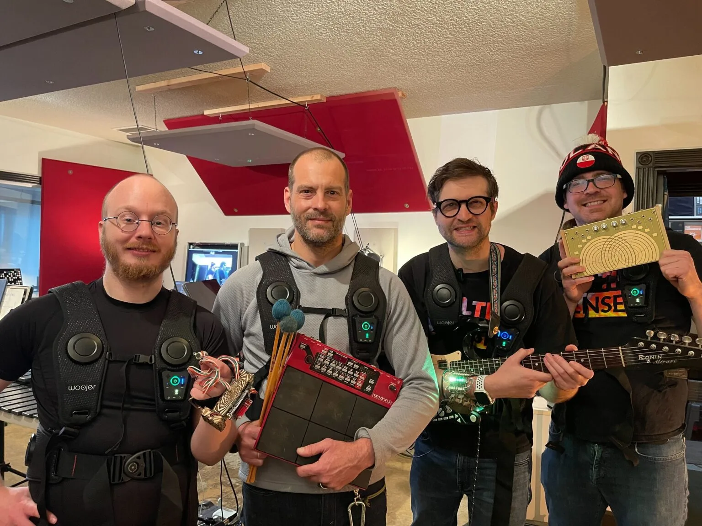

TOUCHING SOUND: BEYOND THE PHONE BUZZ
Most people experience haptics as a simple, buzzing motor inside a smartphone. But human skin is an extraordinarily nuanced organ, capable of perceiving subtle textures, sharp mechanical taps, deep acoustic chest rumbles, spatial pressure waves, and thermal gradients. The Haptic Petting Zoo is an interactive exhibition designed to shatter the assumption that sound is only for ears.
Conceived and led by Deaf hardware designer and acoustic accessibility researcher Dillon Simeone, the project originally premiered as an experimental prototype session with Universal Music Design in 2024, followed by an oversubscribed hands-on workshop at Portland's prestigious Teardown 2026 conference.
Now, backed by a $96,000 Creative Heights Grant from the Oregon Community Foundation — which voluntarily increased the funding request to ensure complete capacity and artist equity — the Haptic Petting Zoo is evolving into a ruggedized, 10+ station interactive touring exhibition set to travel across Oregon for two full years.
"Most interactive art starts with what you see or hear, but this grant gives us the runway to explore what happens when you build art directly for the skin. With this support from Creative Heights, we can take the Haptic Petting Zoo from benchtop prototypes to rugged, living kinetic sculptures that anyone across Oregon can connect with through touch." — Dillon Simeone, Project Lead
Fiscally sponsored and engineered in collaboration with Control+H (PDX Hackerspace), the exhibition explores modular packaging inside industrial Pelican Air transport cases. From sharp solenoid clicks to bass transducers, centrifugal air vortexes, and smart haptic rotary knobs, visitors can touch, manipulate, and literally play sound as a tangible medium.

Figure 1. The Origin. Community members testing vibrating acoustic benches, early GELU bracers, and sound-reactive transducers during early tactile bench prototyping sessions in Portland with Universal Music Design.
THE ARCHITECTURE OF A TOURING ZOO: WHY PELICAN AIR CASES?
Touring an interactive electronic art exhibition across Oregon’s rural libraries, community centers, schools, and cultural venues presents unique mechanical and logistics challenges. Fragile one-off bench prototypes won't survive thousands of miles in transit or continuous hands-on interaction from enthusiastic visitors.
To solve this, our hardware R&D centers around Pelican Air cases as protective transport shells and modular station enclosures. These cases provide proven impact resistance, weather protection, and lightweight handling, giving us a durable foundation to iterate upon.
Our goal is to make setup as friction-free as possible for diverse host venues — designing toward quick-deployment enclosures, intuitive power options, and accessible touch surfaces that invite visitors of all ages and abilities to explore immediately.
Because this project is built openly at Control+H, we welcome maker creativity: whether prototyping custom internal sub-chassis, exploring rapid-disconnect wiring harnesses, or testing hot-swappable tactile mechanisms, the enclosure architecture is designed to evolve alongside the community’s best ideas.
⚡ Rapid Setup Goals
Designing toward intuitive, plug-and-play station setup that any venue host can manage.
🛡️ Transit Durability
Pelican Air shells protect sensitive electro-mechanical actuators during travel across Oregon.
🔧 Modular Serviceability
Encouraging easily serviceable sub-assemblies so stations stay active throughout the 2-year tour.
♿ Universal Ergonomics
Prioritizing accessible touch surfaces engineered comfortably for seated, standing, or wheelchair users.